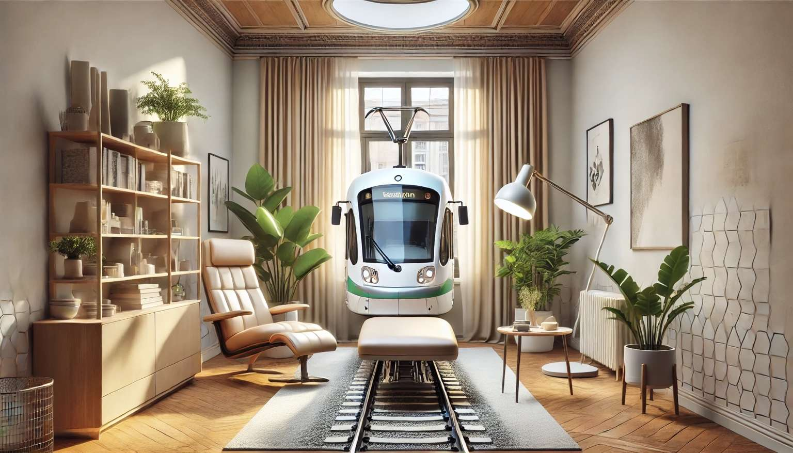

Anfahrt - Beschreibung
Sachsentor 29-31, 21029 Hamburg
Sie finden meine Praxis für Psychotherapie zentral in der Bergedorfer Innenstadt. Den Eingang zum Praxisgebäude finden Sie in der Sachsentor-Passage.
Anfahrt mit öffentlichen Verkehrsmitteln
- Nutzen Sie am besten die S2 oder den RE1 bis zur Haltestelle „Bergedorf Bf“.
- Von dort aus sind es ca. 5 Minuten fußläufig durch die Fußgängerzone.
Anfahrt mit dem Auto
- Es gibt kostenpflichtige Parkmöglichkeiten rund um den anliegenden Schlosspark.
- Beispiele: Bergedorfer Schlossstraße oder Chrysanderstraße.
Barrierefreiheit
Bitte beachten Sie, dass es sich bei meiner Praxis um keine barrierefreie Räumlichkeit handelt.